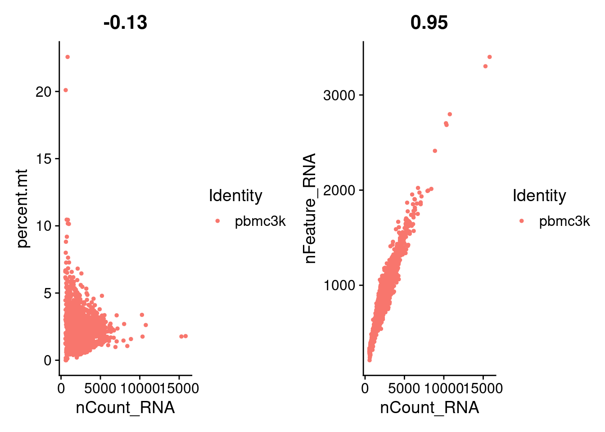
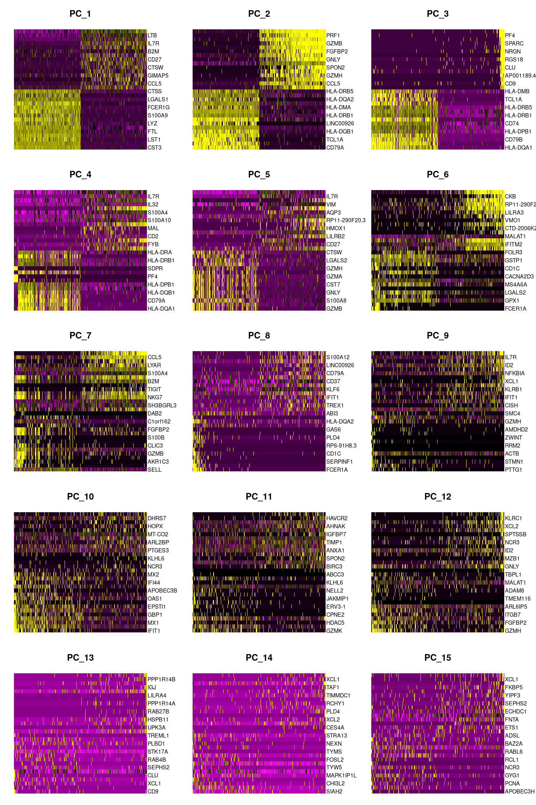
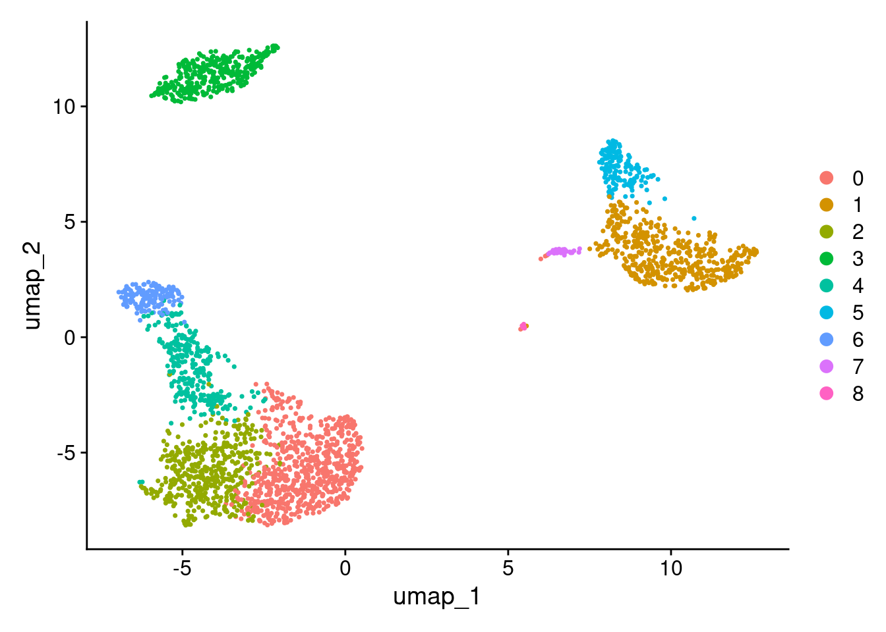
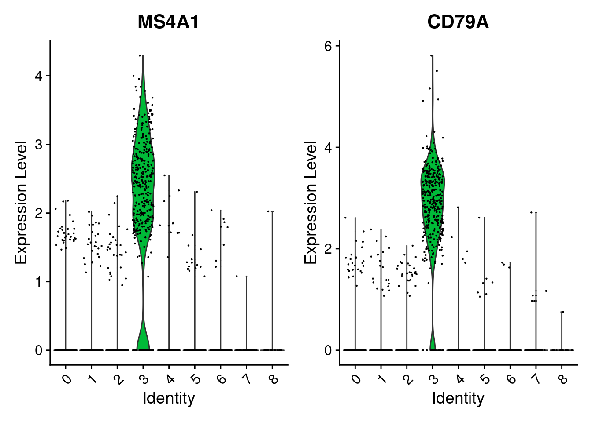
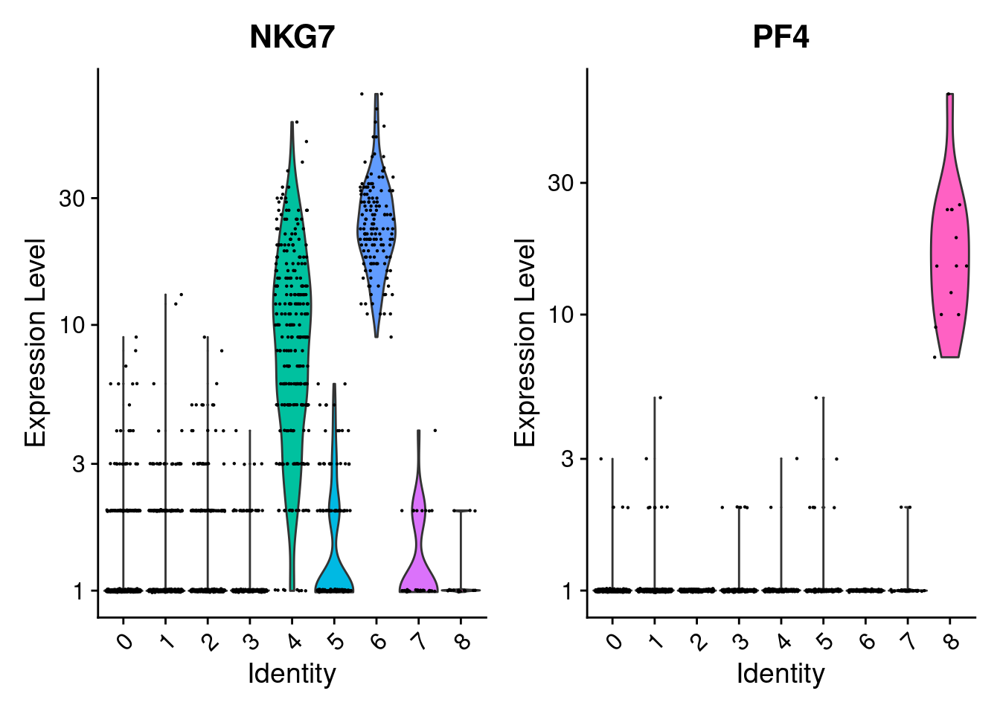
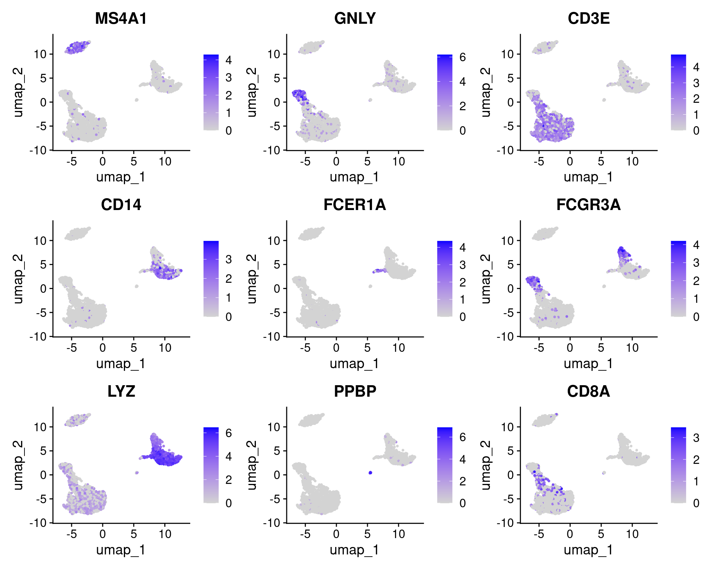

Getting started with Seurat
2026-01-15
Last updated: 2026-01-15
Checks: 7 0
Knit directory: muse/
This reproducible R Markdown analysis was created with workflowr (version 1.7.1). The Checks tab describes the reproducibility checks that were applied when the results were created. The Past versions tab lists the development history.
Great! Since the R Markdown file has been committed to the Git repository, you know the exact version of the code that produced these results.
Great job! The global environment was empty. Objects defined in the global environment can affect the analysis in your R Markdown file in unknown ways. For reproduciblity it’s best to always run the code in an empty environment.
The command set.seed(20200712) was run prior to running
the code in the R Markdown file. Setting a seed ensures that any results
that rely on randomness, e.g. subsampling or permutations, are
reproducible.
Great job! Recording the operating system, R version, and package versions is critical for reproducibility.
Nice! There were no cached chunks for this analysis, so you can be confident that you successfully produced the results during this run.
Great job! Using relative paths to the files within your workflowr project makes it easier to run your code on other machines.
Great! You are using Git for version control. Tracking code development and connecting the code version to the results is critical for reproducibility.
The results in this page were generated with repository version a1a2795. See the Past versions tab to see a history of the changes made to the R Markdown and HTML files.
Note that you need to be careful to ensure that all relevant files for
the analysis have been committed to Git prior to generating the results
(you can use wflow_publish or
wflow_git_commit). workflowr only checks the R Markdown
file, but you know if there are other scripts or data files that it
depends on. Below is the status of the Git repository when the results
were generated:
Ignored files:
Ignored: .Rproj.user/
Ignored: data/1M_neurons_filtered_gene_bc_matrices_h5.h5
Ignored: data/293t/
Ignored: data/293t_3t3_filtered_gene_bc_matrices.tar.gz
Ignored: data/293t_filtered_gene_bc_matrices.tar.gz
Ignored: data/5k_Human_Donor1_PBMC_3p_gem-x_5k_Human_Donor1_PBMC_3p_gem-x_count_sample_filtered_feature_bc_matrix.h5
Ignored: data/5k_Human_Donor2_PBMC_3p_gem-x_5k_Human_Donor2_PBMC_3p_gem-x_count_sample_filtered_feature_bc_matrix.h5
Ignored: data/5k_Human_Donor3_PBMC_3p_gem-x_5k_Human_Donor3_PBMC_3p_gem-x_count_sample_filtered_feature_bc_matrix.h5
Ignored: data/5k_Human_Donor4_PBMC_3p_gem-x_5k_Human_Donor4_PBMC_3p_gem-x_count_sample_filtered_feature_bc_matrix.h5
Ignored: data/97516b79-8d08-46a6-b329-5d0a25b0be98.h5ad
Ignored: data/Parent_SC3v3_Human_Glioblastoma_filtered_feature_bc_matrix.tar.gz
Ignored: data/brain_counts/
Ignored: data/cl.obo
Ignored: data/cl.owl
Ignored: data/jurkat/
Ignored: data/jurkat:293t_50:50_filtered_gene_bc_matrices.tar.gz
Ignored: data/jurkat_293t/
Ignored: data/jurkat_filtered_gene_bc_matrices.tar.gz
Ignored: data/pbmc20k/
Ignored: data/pbmc20k_seurat/
Ignored: data/pbmc3k.csv
Ignored: data/pbmc3k.csv.gz
Ignored: data/pbmc3k.h5ad
Ignored: data/pbmc3k/
Ignored: data/pbmc3k_bpcells_mat/
Ignored: data/pbmc3k_export.mtx
Ignored: data/pbmc3k_matrix.mtx
Ignored: data/pbmc3k_seurat.rds
Ignored: data/pbmc4k_filtered_gene_bc_matrices.tar.gz
Ignored: data/pbmc_1k_v3_filtered_feature_bc_matrix.h5
Ignored: data/pbmc_1k_v3_raw_feature_bc_matrix.h5
Ignored: data/refdata-gex-GRCh38-2020-A.tar.gz
Ignored: data/seurat_1m_neuron.rds
Ignored: data/t_3k_filtered_gene_bc_matrices.tar.gz
Ignored: r_packages_4.4.1/
Ignored: r_packages_4.5.0/
Untracked files:
Untracked: analysis/bioc.Rmd
Untracked: analysis/bioc_scrnaseq.Rmd
Untracked: analysis/likelihood.Rmd
Untracked: bpcells_matrix/
Untracked: data/Caenorhabditis_elegans.WBcel235.113.gtf.gz
Untracked: data/GCF_043380555.1-RS_2024_12_gene_ontology.gaf.gz
Untracked: data/arab.rds
Untracked: data/astronomicalunit.csv
Untracked: data/femaleMiceWeights.csv
Untracked: data/lung_bcell.rds
Untracked: m3/
Untracked: women.json
Unstaged changes:
Modified: analysis/isoform_switch_analyzer.Rmd
Note that any generated files, e.g. HTML, png, CSS, etc., are not included in this status report because it is ok for generated content to have uncommitted changes.
These are the previous versions of the repository in which changes were
made to the R Markdown (analysis/seurat.Rmd) and HTML
(docs/seurat.html) files. If you’ve configured a remote Git
repository (see ?wflow_git_remote), click on the hyperlinks
in the table below to view the files as they were in that past version.
| File | Version | Author | Date | Message |
|---|---|---|---|---|
| Rmd | a1a2795 | Dave Tang | 2026-01-15 | Run FindSubCluster() again |
| html | 84e4014 | Dave Tang | 2026-01-15 | Build site. |
| Rmd | d006722 | Dave Tang | 2026-01-15 | Find subclusters under one cluster |
| html | 5620639 | Dave Tang | 2025-01-16 | Build site. |
| Rmd | 2584afe | Dave Tang | 2025-01-16 | Implement log-normalisation |
| html | 4c515ea | Dave Tang | 2024-09-02 | Build site. |
| Rmd | f35344e | Dave Tang | 2024-09-02 | Update notebook |
| html | e563895 | Dave Tang | 2024-09-02 | Build site. |
| Rmd | c146419 | Dave Tang | 2024-09-02 | Finding variable features |
| html | 191b5c9 | Dave Tang | 2024-09-02 | Build site. |
| Rmd | 3314410 | Dave Tang | 2024-09-02 | Update Normalisation section |
| html | d4a7990 | Dave Tang | 2024-09-02 | Build site. |
| Rmd | 65926ae | Dave Tang | 2024-09-02 | Update basic filtering |
| html | d60b0ac | Dave Tang | 2024-09-02 | Build site. |
| Rmd | 726b2f9 | Dave Tang | 2024-09-02 | Update Seurat object section |
| html | b41ac8e | Dave Tang | 2024-08-29 | Build site. |
| Rmd | 717d440 | Dave Tang | 2024-08-29 | Re-run using updated Seurat version |
| html | 8188fef | Dave Tang | 2024-04-15 | Build site. |
| Rmd | d103170 | Dave Tang | 2024-04-15 | Variance explained |
| html | b185370 | Dave Tang | 2024-04-15 | Build site. |
| Rmd | 30c319d | Dave Tang | 2024-04-15 | Download example AnnData file |
| html | 237607a | Dave Tang | 2024-04-07 | Build site. |
| Rmd | 2ba0e6d | Dave Tang | 2024-04-07 | Fix zip conditional |
| html | 5f6b5a7 | Dave Tang | 2024-04-07 | Build site. |
| Rmd | f5d29f9 | Dave Tang | 2024-04-07 | Export as CSV |
| html | 261b999 | Dave Tang | 2024-03-20 | Build site. |
| Rmd | de75931 | Dave Tang | 2024-03-20 | Filtering on mitochondrial percent |
| html | 03bb7a1 | Dave Tang | 2024-03-20 | Build site. |
| Rmd | 0887184 | Dave Tang | 2024-03-20 | Complete official tutorial |
| html | 23b21ad | Dave Tang | 2024-03-20 | Build site. |
| Rmd | 64ac12f | Dave Tang | 2024-03-20 | Normalisation, variable genes, and scaling |
| html | 3c41e26 | Dave Tang | 2024-03-20 | Build site. |
| Rmd | d5ab5a8 | Dave Tang | 2024-03-20 | Basic filtering |
| html | 5de3e6c | Dave Tang | 2024-03-19 | Build site. |
| Rmd | 0e1dfa9 | Dave Tang | 2024-03-19 | Sparse matrix |
| html | 944e5f2 | Dave Tang | 2024-03-19 | Build site. |
| Rmd | ae0ea42 | Dave Tang | 2024-03-19 | Getting started with Seurat |
This post follows the Peripheral Blood Mononuclear Cells (PBMCs) tutorial for 2,700 single cells. It was written while I was going through the tutorial and contains my notes. The dataset for this tutorial can be downloaded from the 10X Genomics dataset page but it is also hosted on Amazon (see below). The PBMCs, which are primary cells with relatively small amounts of RNA (around 1pg RNA/cell), come from a healthy donor. There were 2,700 cells detected and sequencing was performed on an Illumina NextSeq 500 with around 69,000 reads per cell. To get started install Seurat by using install.packages() and the presto package, which will be used finding markers. (The bench package is also installed for timing some steps.)
install.packages("remotes")
install.packages("Seurat")
remotes::install_github("immunogenomics/presto")
install.packages("bench")If you get the warning:
‘SeuratObject’ was built under R 4.3.0 but the current version is 4.3.2; it is recomended that you reinstall ‘SeuratObject’ as the ABI (sic) for R may have changed
re-install the SeuratObject package using a repository
that has an updated copy. The same goes for the htmltools
package.
install.packages("SeuratObject", repos = "https://cloud.r-project.org/")
install.packages("htmltools", repos = "https://cloud.r-project.org/")
packageVersion("SeuratObject")
packageVersion("htmltools")Load Seurat and bench for some
benchmarking.
suppressPackageStartupMessages(library("Seurat"))
suppressPackageStartupMessages(library("bench"))
suppressPackageStartupMessages(library("presto"))
packageVersion("Seurat")[1] '5.3.0'packageVersion('presto')[1] '1.0.0'Data
To follow the tutorial, you’ll need the 10X data, which can be download from AWS.
mkdir -p data/pbmc3k && cd data/pbmc3k
wget -c https://s3-us-west-2.amazonaws.com/10x.files/samples/cell/pbmc3k/pbmc3k_filtered_gene_bc_matrices.tar.gz
tar -xzf pbmc3k_filtered_gene_bc_matrices.tar.gzThe extracted files.
ls -1 data/pbmc3k/filtered_gene_bc_matrices/hg19barcodes.tsv
genes.tsv
matrix.mtxmatrix.mtx is a MatrixMarket
file. It has the following properties:
- Only non-zero entries are stored in the file
- Comments start with a
%, like LaTeX - The first line indicates the total number of rows, columns, and entries
- The following lines after the first provide a row and column number and the value at that coordinate
head data/pbmc3k/filtered_gene_bc_matrices/hg19/matrix.mtx%%MatrixMarket matrix coordinate real general
%
32738 2700 2286884
32709 1 4
32707 1 1
32706 1 10
32704 1 1
32703 1 5
32702 1 6
32700 1 10Seurat object
Load 10x data into a matrix using Read10X(); we will use
bench::mark() to measure memory usage and to time how long
the function ran. Note that using bench::mark() will mean
that the expression will run at least twice.
bench::mark(
pbmc.data <- Read10X(data.dir = "data/pbmc3k/filtered_gene_bc_matrices/hg19/")
)Warning: Some expressions had a GC in every iteration; so filtering is
disabled.# A tibble: 1 × 6
expression min median `itr/sec` mem_alloc `gc/sec`
<bch:expr> <bch> <bch:> <dbl> <bch:byt> <dbl>
1 "pbmc.data <- Read10X(data.dir = \"… 1.06s 1.06s 0.945 206MB 4.72The matrix is in the dgCMatrix-class:
The dgCMatrix class is a class of sparse numeric matrices in the compressed, sparse, column-oriented format. In this implementation the non-zero elements in the columns are sorted into increasing row order. dgCMatrix is the “standard” class for sparse numeric matrices in the Matrix package.
class(pbmc.data)[1] "dgCMatrix"
attr(,"package")
[1] "Matrix"The matrix (gene by barcode) contains 32738 rows (genes) and 2700 columns (barcodes).
dim(pbmc.data)[1] 32738 2700Save as CSV file.
system.time(
write.csv(x = pbmc.data, file = "data/pbmc3k.csv")
) user system elapsed
31.992 0.520 32.611 Gzip.
if [[ ! -f data/pbmc3k.csv.gz ]]; then
gzip data/pbmc3k.csv
fi
ls -lh data/pbmc3k.csv.gz-rw-r--r-- 1 rstudio rstudio 3.4M Jan 15 00:44 data/pbmc3k.csv.gzCheck out the first six genes and barcodes.
pbmc.data[1:6, 1:6]6 x 6 sparse Matrix of class "dgCMatrix"
AAACATACAACCAC-1 AAACATTGAGCTAC-1 AAACATTGATCAGC-1
MIR1302-10 . . .
FAM138A . . .
OR4F5 . . .
RP11-34P13.7 . . .
RP11-34P13.8 . . .
AL627309.1 . . .
AAACCGTGCTTCCG-1 AAACCGTGTATGCG-1 AAACGCACTGGTAC-1
MIR1302-10 . . .
FAM138A . . .
OR4F5 . . .
RP11-34P13.7 . . .
RP11-34P13.8 . . .
AL627309.1 . . .Summary of total expression (number of detected transcripts) per single barcode.
summary(colSums(pbmc.data)) Min. 1st Qu. Median Mean 3rd Qu. Max.
548 1758 2197 2367 2763 15844 Summary of total number of transcripts per gene.
summary(colSums(t(pbmc.data))) Min. 1st Qu. Median Mean 3rd Qu. Max.
0.0 0.0 1.0 195.2 37.0 161685.0 The range in the total expression of genes is quite large. A more useful summary is how often a gene is detected (at least one transcript) across all barcodes.
at_least_one <- apply(pbmc.data, 2, function(x) sum(x>0))On average (median), a gene is detected in 817 barcodes (out of 2700). This is a more useful metric for filtering out genes instead of relying on total expression.
hist(
at_least_one,
breaks = 100,
main = "Distribution of detected genes",
xlab = "Genes with at least one tag"
)
abline(v = median(at_least_one), col = 2, lty = 3)
Total expression per cell. The median sum of expression among the single cells is 2197. This distribution is very similar to the distribution of detected genes shown above.
hist(
colSums(pbmc.data),
breaks = 100,
main = "Expression sum per cell",
xlab = "Sum expression"
)
abline(v = median(colSums(pbmc.data)), col = 2, lty = 3)
We will filter out genes and barcodes before we continue with the analysis. The tutorial has arbitrary values of keeping genes expressed in three or more cells and keeping barcodes with at least 200 detected genes.
Manually check the number of genes detected in three or more cells; a lot of genes are not detected in 3 or more cells.
tmp <- apply(pbmc.data, 1, function(x) sum(x>0))
table(tmp>=3)
FALSE TRUE
19024 13714 All cells have at least 200 detected genes (where detected is at least one transcript).
keep <- tmp>=3
tmp <- pbmc.data[keep,]
at_least_one <- apply(tmp, 2, function(x) sum(x>0))
summary(at_least_one) Min. 1st Qu. Median Mean 3rd Qu. Max.
212.0 690.0 816.0 845.5 952.0 3400.0 We will now create the Seurat object using
CreateSeuratObject; see ?SeuratObject for more
information on the class.
pbmc <- CreateSeuratObject(
counts = pbmc.data,
min.cells = 3,
min.features = 200,
project = "pbmc3k"
)Warning: Feature names cannot have underscores ('_'), replacing with dashes
('-')class(pbmc)[1] "Seurat"
attr(,"package")
[1] "SeuratObject"The Seurat object contains the same number of genes and barcodes as our manual checks above.
pbmcAn object of class Seurat
13714 features across 2700 samples within 1 assay
Active assay: RNA (13714 features, 0 variable features)
1 layer present: countsSlots in Seurat object.
SeuratObject: Data Structures for Single Cell Data
Defines S4 classes for single-cell genomic data and associated information, such as dimensionality reduction embeddings, nearest-neighbor graphs, and spatially-resolved coordinates. Provides data access methods and R-native hooks to ensure the Seurat object is familiar to other R users
Read more about the S4 class in the Advanced R book.
slotNames(pbmc) [1] "assays" "meta.data" "active.assay" "active.ident" "graphs"
[6] "neighbors" "reductions" "images" "project.name" "misc"
[11] "version" "commands" "tools" Basic filtering
The tutorial states that “The number of genes and UMIs (nGene and
nUMI) are automatically calculated for every object by Seurat.” The nUMI
is calculated as num.mol <- colSums(object.raw.data),
i.e. each transcript is a unique molecule. The number of genes is simply
the tally of genes with at least 1 transcript;
num.genes <- colSums(object.raw.data > is.expr) where
is.expr is zero.
A common quality control metric is the percentage of transcripts from the mitochondrial genome. According to the paper Classification of low quality cells from single-cell RNA-seq data the reason this is a quality control metric is because if a single cell is lysed, cytoplasmic RNA will be lost apart from the RNA that is enclosed in the mitochondria, which will be retained and sequenced.
Human mitochondria genes conveniently start with MT; however, we can generalise this a little (for use with other organisms) by ignoring case.
mito.genes <- grep(pattern = "^MT-", x = rownames(x = pbmc@assays$RNA), ignore.case = TRUE, value = TRUE)
length(mito.genes)[1] 13Manually calculate the mitochrondrial percent for each barcode.
percent.mito <- Matrix::colSums(pbmc[['RNA']]$counts[mito.genes, ]) / Matrix::colSums(pbmc[['RNA']]$counts) * 100
head(percent.mito)AAACATACAACCAC-1 AAACATTGAGCTAC-1 AAACATTGATCAGC-1 AAACCGTGCTTCCG-1
3.0177759 3.7935958 0.8897363 1.7430845
AAACCGTGTATGCG-1 AAACGCACTGGTAC-1
1.2244898 1.6643551 Metadata is stored in the meta.data slot.
head(pbmc@meta.data) orig.ident nCount_RNA nFeature_RNA
AAACATACAACCAC-1 pbmc3k 2419 779
AAACATTGAGCTAC-1 pbmc3k 4903 1352
AAACATTGATCAGC-1 pbmc3k 3147 1129
AAACCGTGCTTCCG-1 pbmc3k 2639 960
AAACCGTGTATGCG-1 pbmc3k 980 521
AAACGCACTGGTAC-1 pbmc3k 2163 781Add mitochondrial percent to the meta using
AddMetaData.
pbmc <- AddMetaData(
object = pbmc,
metadata = percent.mito,
col.name = "percent.mito"
)
head(pbmc@meta.data) orig.ident nCount_RNA nFeature_RNA percent.mito
AAACATACAACCAC-1 pbmc3k 2419 779 3.0177759
AAACATTGAGCTAC-1 pbmc3k 4903 1352 3.7935958
AAACATTGATCAGC-1 pbmc3k 3147 1129 0.8897363
AAACCGTGCTTCCG-1 pbmc3k 2639 960 1.7430845
AAACCGTGTATGCG-1 pbmc3k 980 521 1.2244898
AAACGCACTGGTAC-1 pbmc3k 2163 781 1.6643551Use PercentageFeatureSet to calculate the percentage of
a set of features, which saves us from some typing. The [[
operator can add columns to object metadata, which is a great place to
stash QC stats.
pbmc[["percent.mt"]] <- PercentageFeatureSet(pbmc, pattern = "^MT-")
head(pbmc@meta.data[, c('percent.mito', 'percent.mt')]) percent.mito percent.mt
AAACATACAACCAC-1 3.0177759 3.0177759
AAACATTGAGCTAC-1 3.7935958 3.7935958
AAACATTGATCAGC-1 0.8897363 0.8897363
AAACCGTGCTTCCG-1 1.7430845 1.7430845
AAACCGTGTATGCG-1 1.2244898 1.2244898
AAACGCACTGGTAC-1 1.6643551 1.6643551Instead of setting a hard filtering threshold, one can use the 3 * Median Absolute Deviation to determine threshold limits for filtering out cells.
median(pbmc@meta.data$percent.mt) - 3 * mad(pbmc@meta.data$percent.mt)[1] -0.3751742median(pbmc@meta.data$percent.mt) + 3 * mad(pbmc@meta.data$percent.mt)[1] 4.436775Plot number of genes, UMIs, and percent mitochondria, which are
typical QC metrics, as a violin plot using VlnPlot().
VlnPlot(pbmc, features = c("nFeature_RNA", "nCount_RNA", "percent.mt"), ncol = 3)Warning: Default search for "data" layer in "RNA" assay yielded no results;
utilizing "counts" layer instead.Warning: The `slot` argument of `FetchData()` is deprecated as of SeuratObject 5.0.0.
ℹ Please use the `layer` argument instead.
ℹ The deprecated feature was likely used in the Seurat package.
Please report the issue at <https://github.com/satijalab/seurat/issues>.
This warning is displayed once every 8 hours.
Call `lifecycle::last_lifecycle_warnings()` to see where this warning was
generated.Warning: `PackageCheck()` was deprecated in SeuratObject 5.0.0.
ℹ Please use `rlang::check_installed()` instead.
ℹ The deprecated feature was likely used in the Seurat package.
Please report the issue at <https://github.com/satijalab/seurat/issues>.
This warning is displayed once every 8 hours.
Call `lifecycle::last_lifecycle_warnings()` to see where this warning was
generated.
A couple of cells have high mitochondrial percentage which may indicate lost of cytoplasmic RNA.
FeatureScatter() is typically used to visualise
feature-feature relationships, but can be used for anything calculated
by the object, i.e. columns in object metadata, PC scores etc.
plot1 <- FeatureScatter(pbmc, feature1 = "nCount_RNA", feature2 = "percent.mt")
plot2 <- FeatureScatter(pbmc, feature1 = "nCount_RNA", feature2 = "nFeature_RNA")
plot1 + plot2
Additional sanity checks; I already know all cells have >200 genes.
table(pbmc@meta.data$percent.mito < 5 & pbmc@meta.data$nFeature_RNA<2500)
FALSE TRUE
62 2638 62 barcodes will be filtered out.
pbmc <- subset(pbmc, subset = nFeature_RNA > 200 & nFeature_RNA < 2500 & percent.mt < 5)
pbmcAn object of class Seurat
13714 features across 2638 samples within 1 assay
Active assay: RNA (13714 features, 0 variable features)
1 layer present: countsNormalisation
After removing unwanted cells from the dataset, the next step is to normalise the data, so that barcodes can be compared against each other. At the time of writing (2017), the only normalisation method implemented in Seurat was log normalisation.
hist(
colSums(pbmc[['RNA']]$counts),
breaks = 100,
main = "Total expression before normalisation",
xlab = "Sum of expression"
)
The global-scaling normalisation method known as “LogNormalize”
normalises the feature expression measurements for each barcode by its
total expression, multiplies this value by a scale factor (10,000 by
default), and finally log-transforms the result. In Seurat v5,
normalised values are stored in the data layer, i.e.,
pbmc[["RNA"]]$data.
Manually perform log-normalisation as I interpret it above.
raw_counts <- as.matrix(pbmc[['RNA']]$counts)
norm_counts <- apply(raw_counts, 2, function(x) x / sum(x) * 10000)
norm_counts <- log1p(norm_counts)
dim(norm_counts)[1] 13714 2638For clarity, in this previous line of code (and in future commands), we provide the default values for certain parameters in the function call. However, this isn’t required and the same behavior can be achieved with:
# the code below is the same as
# pbmc <- NormalizeData(pbmc)
# since the two arguments are the default
pbmc <- NormalizeData(pbmc, normalization.method = "LogNormalize", scale.factor = 10000, verbose = FALSE)
pbmcAn object of class Seurat
13714 features across 2638 samples within 1 assay
Active assay: RNA (13714 features, 0 variable features)
2 layers present: counts, dataCompare NormalizeData results with results from my
implementation.
norm_counts_seurat <- as.matrix(pbmc[['RNA']]$data)
identical(norm_counts_seurat, norm_counts)[1] TRUEWhile this method of normalisation is standard and widely used in
scRNA-seq analysis, global-scaling relies on an assumption that
each cell originally contains the same number of RNA
molecules. Alternative workflows for the single cell
pre-processing are available that do not make these assumptions. For
example the SCTransform() normalisation workflow is an
alternative method and its replaces the need to run
NormalizeData, FindVariableFeatures, or
ScaleData.
hist(
colSums(pbmc[['RNA']]$data),
breaks = 100,
main = "Total expression after normalisation",
xlab = "Sum of expression"
)
Identification of highly variable features (feature selection)
Once the data is normalised, the next step is to find genes are vary between single cells since genes that are constant among all cells have no distinguishing power. These are genes that exhibit high cell-to-cell variation in the dataset (i.e., they are highly expressed in some cells, and lowly expressed in others) and it has been found that focusing on these genes in downstream analysis helps to highlight biological signal in single-cell datasets.
The FindVariableFeatures() function calculates the
average expression and dispersion for each gene, places these genes into
bins, and then calculates a Z-score for dispersion within each bin. This
is interpreted as take each gene, calculate the average expression and
variance of the gene across the 2638 barcodes, categorise genes into 20
bins (default is 20) based on their expression and variance, and finally
normalise the variance in each bin.
This was the same approach in Macosko et al. and new methods for detecting genes with variable expression patterns have been implemented in Seurat. The parameters used below are typical settings for UMI data that is normalised to a total of 10,000 molecules and will identify 2,000 variable genes. These genes will be used in downstream analyses, like PCA. The tutorial recommends that users should explore the parameters themselves since each dataset is different.
vst: First, fits a line to the relationship of log(variance) and log(mean) using local polynomial regression (loess). Then standardizes the feature values using the observed mean and expected variance (given by the fitted line). Feature variance is then calculated on the standardized values after clipping to a maximum (see clip.max parameter).
pbmc <- FindVariableFeatures(pbmc, selection.method = "vst", nfeatures = 2000, verbose = FALSE)Double check that 2000 genes are returned.
length(VariableFeatures(pbmc))[1] 2000Identify the 10 most highly variable genes
top10 <- head(VariableFeatures(pbmc), 10)
top10 [1] "PPBP" "LYZ" "S100A9" "IGLL5" "GNLY" "FTL" "PF4" "FTH1"
[9] "GNG11" "S100A8"Plot variable features with and without labels
plot1 <- VariableFeaturePlot(pbmc)
plot2 <- LabelPoints(plot = plot1, points = top10, repel = TRUE)When using repel, set xnudge and ynudge to 0 for optimal resultsplot1 + plot2Warning in scale_x_log10(): log-10 transformation introduced infinite values.
log-10 transformation introduced infinite values.
Scaling the data
Next, we apply a linear transformation (“scaling”) that is a standard
pre-processing step prior to dimensional reduction techniques like PCA.
The ScaleData() function:
- Shifts the expression of each gene, so that the mean expression across cells is 0
- Scales the expression of each gene, so that the variance across
cells is 1
- This step gives equal weight in downstream analyses, so that highly-expressed genes do not dominate
- The results of this are stored in
pbmc[["RNA"]]$scale.data - By default, only variable features are scaled but you can specify the features argument to scale additional features
all.genes <- rownames(pbmc)
pbmc <- ScaleData(pbmc, features = all.genes, verbose = FALSE)
dim(pbmc[["RNA"]]$scale.data)[1] 13714 2638Scale data shifts the average to zero.
hist(
colSums(pbmc[['RNA']]$scale.data),
breaks = 100,
main = "Total expression after scaling",
xlab = "Sum of expression"
)
abline(v = mean(colSums(pbmc@assays$RNA$scale.data)), col = 2, lty = 3)
In Seurat, we the ScaleData() function is also used to
remove unwanted sources of variation from a single-cell dataset. For
example, we could “regress out” heterogeneity associated with (for
example) cell cycle stage, or mitochondrial contamination.
bench::system_time(
pbmc_regress <- ScaleData(pbmc, vars.to.regress = "percent.mt", verbose = FALSE)
)Warning: Different features in new layer data than already exists for
scale.dataprocess real
6.57s 6.57s pbmc_no_regress <- ScaleData(pbmc, verbose = FALSE)Warning: Different features in new layer data than already exists for
scale.datadim(pbmc_regress@assays$RNA$scale.data)[1] 2000 2638dim(pbmc_no_regress@assays$RNA$scale.data)[1] 2000 2638Compare regress with without regress.
plot(
pbmc_no_regress@assays$RNA$scale.data,
pbmc_regress@assays$RNA$scale.data,
pch = 16,
cex = 0.3
)
abline(a = 0, b = 1, lty = 3, col = 2)
However, the Seurat developers strongly recommend the use of their
new normalisation workflow, SCTransform(). The method is
described in this
paper, with a separate vignette
using Seurat. As with ScaleData(), the function
SCTransform() also includes a vars.to.regress
parameter.
Perform linear dimensional reduction
Next we perform PCA on the scaled data. By default, only the
previously determined variable features are used as input, but a
different subset can be defined using features argument (if you do want
to use a custom subset of features, make sure you pass these to
ScaleData first).
For the first principal components, Seurat outputs a list of genes with the most positive and negative loadings, representing modules of genes that exhibit either correlation (or anti-correlation) across single-cells in the dataset.
pbmc <- RunPCA(pbmc, features = VariableFeatures(object = pbmc), verbose = FALSE)Seurat provides several useful ways of visualising both cells and
features that define the PCA, including VizDimReduction(),
DimPlot(), and DimHeatmap().
print(pbmc[["pca"]], dims = 1:5, nfeatures = 5)PC_ 1
Positive: CST3, TYROBP, LST1, AIF1, FTL
Negative: MALAT1, LTB, IL32, IL7R, CD2
PC_ 2
Positive: CD79A, MS4A1, TCL1A, HLA-DQA1, HLA-DQB1
Negative: NKG7, PRF1, CST7, GZMB, GZMA
PC_ 3
Positive: HLA-DQA1, CD79A, CD79B, HLA-DQB1, HLA-DPB1
Negative: PPBP, PF4, SDPR, SPARC, GNG11
PC_ 4
Positive: HLA-DQA1, CD79B, CD79A, MS4A1, HLA-DQB1
Negative: VIM, IL7R, S100A6, IL32, S100A8
PC_ 5
Positive: GZMB, NKG7, S100A8, FGFBP2, GNLY
Negative: LTB, IL7R, CKB, VIM, MS4A7 Visualise top genes associated with reduction components.
VizDimLoadings(pbmc, dims = 1:2, reduction = "pca")
PC_1 versus PC_2.
DimPlot(pbmc, reduction = "pca") + NoLegend()
In particular DimHeatmap() allows for easy exploration
of the primary sources of heterogeneity in a dataset, and can be useful
when trying to decide which PCs to include for further downstream
analyses. Both cells and features are ordered according to their PCA
scores. Setting cells to a number, plots the “extreme” cells on both
ends of the spectrum, which dramatically speeds plotting for large
datasets. Though clearly a supervised analysis, we find this to be a
valuable tool for exploring correlated feature sets.
DimHeatmap(pbmc, dims = 1, cells = 500, balanced = TRUE)
Additional PCs.
DimHeatmap(pbmc, dims = 1:15, cells = 500, balanced = TRUE)
Variance explained by each PC.
# manually calculate
total_variance <- sum(
matrixStats::rowVars(pbmc[['RNA']]$scale.data[VariableFeatures(pbmc), ])
)
stopifnot(all.equal(total_variance, pbmc@reductions$pca@misc$total.variance))
eig_values <- (pbmc@reductions$pca@stdev)^2
eig_values / total_variance [1] 0.029063926 0.011657001 0.008643280 0.008104272 0.005802288 0.003737178
[7] 0.002467342 0.002182152 0.001967766 0.001941729 0.001910415 0.001843503
[13] 0.001825592 0.001780982 0.001769625 0.001759474 0.001730531 0.001724861
[19] 0.001712266 0.001707669 0.001701991 0.001696944 0.001687342 0.001678502
[25] 0.001677136 0.001671877 0.001668437 0.001658889 0.001657207 0.001649961
[31] 0.001644920 0.001630786 0.001627438 0.001625581 0.001618277 0.001617317
[37] 0.001609471 0.001604182 0.001602075 0.001596848 0.001590176 0.001585386
[43] 0.001583941 0.001578896 0.001578355 0.001569160 0.001565071 0.001562588
[49] 0.001557475 0.001553564Determine the dimensionality of the dataset
To overcome the extensive technical noise in any single feature for scRNA-seq data, Seurat clusters cells based on their PCA scores, with each PC essentially representing a “metafeature” that combines information across a correlated feature set. The top principal components therefore represent a robust compression of the dataset. However, how many components should we choose to include? 10? 20? 100?
In Macosko et al, we implemented a resampling test inspired by the JackStraw procedure. While still available in Seurat (see previous vignette), this is a slow and computationally expensive procedure, and we is no longer routinely used in single cell analysis.
An alternative heuristic method generates an “Elbow plot”: a ranking
of principle components based on the percentage of variance explained by
each one (ElbowPlot() function). In this example, we can
observe an “elbow” around PC9-10, suggesting that the majority of true
signal is captured in the first 10 PCs.
# to reproduce ElbowPlot
# plot(1:length(pbmc@reductions$pca@stdev), pbmc@reductions$pca@stdev, pch = 16)
ElbowPlot(pbmc)
Identifying the true dimensionality of a dataset can be challenging/uncertain for the user. The Seurat developers therefore suggest multiple approaches.
- The first is more supervised, exploring PCs to determine relevant sources of heterogeneity, and could be used in conjunction with GSEA for example.
- The second is using
ElbowPlot() - The third is a heuristic that is commonly used, and can be calculated instantly.
In this example, we might have been justified in choosing anything between PC 7-12 as a cutoff. 10 was chosen, but users are encouraged to consider the following:
- Dendritic cell and NK aficionados may recognise that genes strongly associated with PCs 12 and 13 define rare immune subsets (i.e. MZB1 is a marker for plasmacytoid DCs). However, these groups are so rare, they are difficult to distinguish from background noise for a dataset of this size without prior knowledge.
- Users are encouraged to repeat downstream analyses with a different number of PCs (10, 15, or even 50!). As you will observe, the results often do not differ dramatically.
- Users are advised to err on the higher side when choosing this parameter. For example, performing downstream analyses with only 5 PCs does significantly and adversely affect results.
Clustering the cells
Seurat applies a graph-based clustering approach, building upon initial strategies in (Macosko et al). Importantly, the distance metric which drives the clustering analysis (based on previously identified PCs) remains the same. However, Seurat’s approach to partitioning the cellular distance matrix into clusters has dramatically improved. This approach was heavily inspired by other graph-based clustering approaches to scRNA-seq data [SNN-Cliq, Xu and Su, Bioinformatics, 2015] and CyTOF data [PhenoGraph, Levine et al., Cell, 2015]. Briefly, these methods embed cells in a graph structure - for example a K-nearest neighbor (kNN) graph, with edges drawn between cells with similar feature expression patterns, and then attempt to partition this graph into highly interconnected “quasi-cliques” or “communities”.
As in PhenoGraph, a KNN graph is constructed based on the Euclidean
distance in PCA space, and refinement of the edge weights between any
two cells based on the shared overlap in their local neighborhoods
(Jaccard similarity). This step is performed using the
FindNeighbors() function, and takes as input the previously
defined dimensionality of the dataset (first 10 PCs).
To cluster the cells, modularity optimisation techniques are applied
such as the Louvain algorithm (default) or SLM [SLM, Blondel et al.,
Journal of Statistical Mechanics], to iteratively group cells together,
with the goal of optimising the standard modularity function. The
FindClusters() function implements this procedure, and
contains a resolution parameter that sets the “granularity” of the
downstream clustering, with higher values leading to a greater number of
clusters. Setting this parameter between 0.4-1.2 typically returns good
results for single-cell datasets of around 3K cells. Optimal resolution
often increases for larger datasets. The clusters can be found using the
Idents() function.
pbmc@graphslist()pbmc <- FindNeighbors(pbmc, dims = 1:10, verbose = FALSE)
str(pbmc@graphs)List of 2
$ RNA_nn :Formal class 'Graph' [package "SeuratObject"] with 7 slots
.. ..@ assay.used: chr "RNA"
.. ..@ i : int [1:52760] 0 6 102 203 213 292 421 451 511 547 ...
.. ..@ p : int [1:2639] 0 38 58 80 97 104 116 151 173 184 ...
.. ..@ Dim : int [1:2] 2638 2638
.. ..@ Dimnames :List of 2
.. .. ..$ : chr [1:2638] "AAACATACAACCAC-1" "AAACATTGAGCTAC-1" "AAACATTGATCAGC-1" "AAACCGTGCTTCCG-1" ...
.. .. ..$ : chr [1:2638] "AAACATACAACCAC-1" "AAACATTGAGCTAC-1" "AAACATTGATCAGC-1" "AAACCGTGCTTCCG-1" ...
.. ..@ x : num [1:52760] 1 1 1 1 1 1 1 1 1 1 ...
.. ..@ factors : list()
$ RNA_snn:Formal class 'Graph' [package "SeuratObject"] with 7 slots
.. ..@ assay.used: chr "RNA"
.. ..@ i : int [1:194492] 0 6 76 102 171 187 198 203 229 292 ...
.. ..@ p : int [1:2639] 0 79 145 198 253 300 370 467 530 581 ...
.. ..@ Dim : int [1:2] 2638 2638
.. ..@ Dimnames :List of 2
.. .. ..$ : chr [1:2638] "AAACATACAACCAC-1" "AAACATTGAGCTAC-1" "AAACATTGATCAGC-1" "AAACCGTGCTTCCG-1" ...
.. .. ..$ : chr [1:2638] "AAACATACAACCAC-1" "AAACATTGAGCTAC-1" "AAACATTGATCAGC-1" "AAACCGTGCTTCCG-1" ...
.. ..@ x : num [1:194492] 1 0.1111 0.0811 0.1765 0.1111 ...
.. ..@ factors : list()pbmc <- FindClusters(pbmc, resolution = 0.5, verbose = FALSE)Look at cluster IDs of the first 5 cells
head(Idents(pbmc), 5)AAACATACAACCAC-1 AAACATTGAGCTAC-1 AAACATTGATCAGC-1 AAACCGTGCTTCCG-1
2 3 2 1
AAACCGTGTATGCG-1
6
Levels: 0 1 2 3 4 5 6 7 8Columns in the meta data.
names(pbmc@meta.data)[1] "orig.ident" "nCount_RNA" "nFeature_RNA" "percent.mito"
[5] "percent.mt" "RNA_snn_res.0.5" "seurat_clusters"Find subclusters under one cluster.
pbmc <- FindSubCluster(pbmc, '0', 'RNA_snn')Modularity Optimizer version 1.3.0 by Ludo Waltman and Nees Jan van Eck
Number of nodes: 684
Number of edges: 24169
Running Louvain algorithm...
Maximum modularity in 10 random starts: 0.6466
Number of communities: 3
Elapsed time: 0 secondsnames(pbmc@meta.data)[1] "orig.ident" "nCount_RNA" "nFeature_RNA" "percent.mito"
[5] "percent.mt" "RNA_snn_res.0.5" "seurat_clusters" "sub.cluster" Sub clusters.
str(pbmc@meta.data$sub.cluster) chr [1:2638] "2" "3" "2" "1" "6" "2" "4" "4" "4" "5" "3" "0_0" "2" "1" "4" ...Run FindSubCluster() again for cluster 1.
pbmc <- FindSubCluster(pbmc, '1', 'RNA_snn')Modularity Optimizer version 1.3.0 by Ludo Waltman and Nees Jan van Eck
Number of nodes: 481
Number of edges: 17455
Running Louvain algorithm...
Maximum modularity in 10 random starts: 0.6910
Number of communities: 3
Elapsed time: 0 secondsstr(pbmc@meta.data$sub.cluster) chr [1:2638] "2" "3" "2" "1_1" "6" "2" "4" "4" "4" "5" "3" "0" "2" "1_1" ...Note that the previous sub cluster results are over-written.
Non-linear dimensional reduction
Seurat offers several non-linear dimensional reduction techniques,
such as tSNE and UMAP, to visualise and explore datasets. The goal of
these algorithms is to learn any underlying structure in the dataset, in
order to place similar cells together in low-dimensional space.
Therefore, cells that are grouped together within graph-based clusters
determined using FindNeighbors() and
FindClusters() should co-localise on these dimension
reduction plots.
While 2D visualisation techniques like tSNE and UMAP are valuable tools for exploring datasets, all visualisation techniques have limitations, and cannot fully represent the complexity of the underlying data. In particular, these methods aim to preserve local distances in the dataset (i.e., ensuring that cells with very similar gene expression profiles co-localise), but often do not preserve more global relationships. Therefore it is fine to leverage techniques like UMAP for visualisation, but avoid drawing biological conclusions solely on the basis of visualisation techniques.
pbmc <- RunUMAP(pbmc, dims = 1:10, verbose = FALSE)Warning: The default method for RunUMAP has changed from calling Python UMAP via reticulate to the R-native UWOT using the cosine metric
To use Python UMAP via reticulate, set umap.method to 'umap-learn' and metric to 'correlation'
This message will be shown once per sessionNote that you can set label = TRUE or use the
LabelClusters() function to help label individual
clusters
DimPlot(pbmc, reduction = "umap")
Finding differentially expressed features
Seurat can find markers that define clusters via differential
expression (DE). By default, it identifies positive and negative markers
of a single cluster (specified in ident.1), compared to
all other cells. FindAllMarkers()
automates this process for all clusters, but you can also test groups of
clusters vs. each other, or against all cells.
In Seurat v5, the {presto} package is used to dramatically improve
the speed of DE analysis, particularly for large datasets. You can
examine the documentation for this function (?FindMarkers)
to explore the min.pct and logfc.threshold
parameters, which can be increased in order to increase the speed of DE
testing.
Find all markers of cluster 2.
cluster2.markers <- FindMarkers(pbmc, ident.1 = 2)Warning: The `slot` argument of `GetAssayData()` is deprecated as of SeuratObject 5.0.0.
ℹ Please use the `layer` argument instead.
ℹ The deprecated feature was likely used in the Seurat package.
Please report the issue at <https://github.com/satijalab/seurat/issues>.
This warning is displayed once every 8 hours.
Call `lifecycle::last_lifecycle_warnings()` to see where this warning was
generated.head(cluster2.markers, n = 5) p_val avg_log2FC pct.1 pct.2 p_val_adj
IL32 2.892340e-90 1.3070772 0.947 0.465 3.966555e-86
LTB 1.060121e-86 1.3312674 0.981 0.643 1.453850e-82
CD3D 8.794641e-71 1.0597620 0.922 0.432 1.206097e-66
IL7R 3.516098e-68 1.4377848 0.750 0.326 4.821977e-64
LDHB 1.642480e-67 0.9911924 0.954 0.614 2.252497e-63Find all markers distinguishing cluster 5 from clusters 0 and 3
cluster5.markers <- FindMarkers(pbmc, ident.1 = 5, ident.2 = c(0, 3))
head(cluster5.markers, n = 5) p_val avg_log2FC pct.1 pct.2 p_val_adj
FCGR3A 8.246578e-205 6.794969 0.975 0.040 1.130936e-200
IFITM3 1.677613e-195 6.192558 0.975 0.049 2.300678e-191
CFD 2.401156e-193 6.015172 0.938 0.038 3.292945e-189
CD68 2.900384e-191 5.530330 0.926 0.035 3.977587e-187
RP11-290F20.3 2.513244e-186 6.297999 0.840 0.017 3.446663e-182Find markers for every cluster compared to all remaining cells, report only the positive ones.
pbmc.markers <- FindAllMarkers(pbmc, only.pos = TRUE, verbose = FALSE)
pbmc.markers |>
dplyr::group_by(cluster) |>
dplyr::filter(avg_log2FC > 1)# A tibble: 7,019 × 7
# Groups: cluster [9]
p_val avg_log2FC pct.1 pct.2 p_val_adj cluster gene
<dbl> <dbl> <dbl> <dbl> <dbl> <fct> <chr>
1 3.75e-112 1.21 0.912 0.592 5.14e-108 0 LDHB
2 9.57e- 88 2.40 0.447 0.108 1.31e- 83 0 CCR7
3 1.15e- 76 1.06 0.845 0.406 1.58e- 72 0 CD3D
4 1.12e- 54 1.04 0.731 0.4 1.54e- 50 0 CD3E
5 1.35e- 51 2.14 0.342 0.103 1.86e- 47 0 LEF1
6 1.94e- 47 1.20 0.629 0.359 2.66e- 43 0 NOSIP
7 2.81e- 44 1.53 0.443 0.185 3.85e- 40 0 PIK3IP1
8 6.27e- 43 1.99 0.33 0.112 8.60e- 39 0 PRKCQ-AS1
9 1.16e- 40 2.70 0.2 0.04 1.59e- 36 0 FHIT
10 1.34e- 34 1.96 0.268 0.087 1.84e- 30 0 MAL
# ℹ 7,009 more rowsSeurat has several tests for differential expression which can be set
with the test.use parameter (see the Differential
expression testing vignette). For example, the ROC test returns the
“classification power” for any individual marker (ranging from 0 -
random, to 1 - perfect).
cluster0.markers <- FindMarkers(pbmc, ident.1 = 0, logfc.threshold = 0.25, test.use = "roc", only.pos = TRUE)Seurat has included several tools for visualising marker expression.
VlnPlot() (shows expression probability distributions
across clusters), and FeaturePlot() (visualises feature
expression on a tSNE or PCA plot) are commonly used visualisations.
There are also RidgePlot(), CellScatter(), and
DotPlot() as additional methods to view your dataset.
VlnPlot(pbmc, features = c("MS4A1", "CD79A"))
You can plot raw counts as well.
VlnPlot(pbmc, features = c("NKG7", "PF4"), layer = "counts", log = TRUE)
Feature plot with a list of genes.
FeaturePlot(
pbmc,
features = c("MS4A1", "GNLY", "CD3E", "CD14", "FCER1A", "FCGR3A", "LYZ", "PPBP", "CD8A")
)
DoHeatmap() generates an expression heatmap for given
cells and features. In this case, we are plotting the top 20 markers (or
all markers if less than 20) for each cluster.
pbmc.markers |>
dplyr::group_by(cluster) |>
dplyr::filter(avg_log2FC > 1) |>
dplyr::slice_head(n = 10) |>
dplyr::ungroup() -> top10
DoHeatmap(pbmc, features = top10$gene) + NoLegend()
Assigning cell type identity to clusters
Fortunately in the case of this dataset, we can use canonical markers to easily match the unbiased clustering to known cell types:
| Cluster ID | Markers | Cell Type |
|---|---|---|
| 0 | IL7R, CCR7 | Naive CD4+ T |
| 1 | CD14, LYZ | CD14+ Mono |
| 2 | IL7R, S100A4 | Memory CD4+ |
| 3 | MS4A1 | B |
| 4 | CD8A | CD8+ T |
| 5 | FCGR3A, MS4A7 | FCGR3A+ Mono |
| 6 | GNLY, NKG7 | NK |
| 7 | FCER1A, CST3 | DC |
| 8 | PPBP | Platelet |
new.cluster.ids <- c("Naive CD4 T", "CD14+ Mono", "Memory CD4 T", "B", "CD8 T", "FCGR3A+ Mono",
"NK", "DC", "Platelet")
names(new.cluster.ids) <- levels(pbmc)
pbmc <- RenameIdents(pbmc, new.cluster.ids)
DimPlot(pbmc, reduction = "umap", label = TRUE, pt.size = 0.5) + NoLegend()
Customise plot using {ggplot2}.
library(ggplot2)
DimPlot(pbmc, reduction = "umap", label = TRUE, label.size = 4.5) + xlab("UMAP 1") +
ylab("UMAP 2") +
theme(axis.title = element_text(size = 18), legend.text = element_text(size = 18)) +
guides(colour = guide_legend(override.aes = list(size = 10)))
From AnnData
Download 1k PBMCs in AnnData format from Open Problems in Single-Cell Analysis.
aws s3 cp --no-sign-request s3://openproblems-data/resources/datasets/openproblems_v1/tenx_1k_pbmc/l1_sqrt/dataset.h5ad .
sessionInfo()R version 4.5.0 (2025-04-11)
Platform: x86_64-pc-linux-gnu
Running under: Ubuntu 24.04.3 LTS
Matrix products: default
BLAS: /usr/lib/x86_64-linux-gnu/openblas-pthread/libblas.so.3
LAPACK: /usr/lib/x86_64-linux-gnu/openblas-pthread/libopenblasp-r0.3.26.so; LAPACK version 3.12.0
locale:
[1] LC_CTYPE=en_US.UTF-8 LC_NUMERIC=C
[3] LC_TIME=en_US.UTF-8 LC_COLLATE=en_US.UTF-8
[5] LC_MONETARY=en_US.UTF-8 LC_MESSAGES=en_US.UTF-8
[7] LC_PAPER=en_US.UTF-8 LC_NAME=C
[9] LC_ADDRESS=C LC_TELEPHONE=C
[11] LC_MEASUREMENT=en_US.UTF-8 LC_IDENTIFICATION=C
time zone: Etc/UTC
tzcode source: system (glibc)
attached base packages:
[1] stats graphics grDevices utils datasets methods base
other attached packages:
[1] ggplot2_3.5.2 future_1.58.0 presto_1.0.0 data.table_1.17.4
[5] Rcpp_1.0.14 bench_1.1.4 Seurat_5.3.0 SeuratObject_5.1.0
[9] sp_2.2-0 workflowr_1.7.1
loaded via a namespace (and not attached):
[1] RColorBrewer_1.1-3 rstudioapi_0.17.1 jsonlite_2.0.0
[4] magrittr_2.0.3 spatstat.utils_3.1-5 farver_2.1.2
[7] rmarkdown_2.29 fs_1.6.6 vctrs_0.6.5
[10] ROCR_1.0-11 spatstat.explore_3.5-2 htmltools_0.5.8.1
[13] sass_0.4.10 sctransform_0.4.2 parallelly_1.45.0
[16] KernSmooth_2.23-26 bslib_0.9.0 htmlwidgets_1.6.4
[19] ica_1.0-3 plyr_1.8.9 plotly_4.11.0
[22] zoo_1.8-14 cachem_1.1.0 whisker_0.4.1
[25] igraph_2.1.4 mime_0.13 lifecycle_1.0.4
[28] pkgconfig_2.0.3 Matrix_1.7-3 R6_2.6.1
[31] fastmap_1.2.0 fitdistrplus_1.2-4 shiny_1.11.1
[34] digest_0.6.37 colorspace_2.1-1 patchwork_1.3.0
[37] ps_1.9.1 rprojroot_2.0.4 tensor_1.5.1
[40] RSpectra_0.16-2 irlba_2.3.5.1 labeling_0.4.3
[43] progressr_0.15.1 spatstat.sparse_3.1-0 httr_1.4.7
[46] polyclip_1.10-7 abind_1.4-8 compiler_4.5.0
[49] withr_3.0.2 fastDummies_1.7.5 R.utils_2.13.0
[52] MASS_7.3-65 tools_4.5.0 lmtest_0.9-40
[55] httpuv_1.6.16 future.apply_1.20.0 goftest_1.2-3
[58] R.oo_1.27.1 glue_1.8.0 callr_3.7.6
[61] profmem_0.7.0 nlme_3.1-168 promises_1.3.3
[64] grid_4.5.0 Rtsne_0.17 getPass_0.2-4
[67] cluster_2.1.8.1 reshape2_1.4.4 generics_0.1.4
[70] gtable_0.3.6 spatstat.data_3.1-6 R.methodsS3_1.8.2
[73] tidyr_1.3.1 utf8_1.2.6 spatstat.geom_3.5-0
[76] RcppAnnoy_0.0.22 ggrepel_0.9.6 RANN_2.6.2
[79] pillar_1.10.2 stringr_1.5.1 limma_3.64.3
[82] spam_2.11-1 RcppHNSW_0.6.0 later_1.4.2
[85] splines_4.5.0 dplyr_1.1.4 lattice_0.22-6
[88] survival_3.8-3 deldir_2.0-4 tidyselect_1.2.1
[91] miniUI_0.1.2 pbapply_1.7-4 knitr_1.50
[94] git2r_0.36.2 gridExtra_2.3 scattermore_1.2
[97] xfun_0.52 statmod_1.5.0 matrixStats_1.5.0
[100] stringi_1.8.7 lazyeval_0.2.2 yaml_2.3.10
[103] evaluate_1.0.3 codetools_0.2-20 tibble_3.3.0
[106] cli_3.6.5 uwot_0.2.3 xtable_1.8-4
[109] reticulate_1.43.0 processx_3.8.6 jquerylib_0.1.4
[112] globals_0.18.0 spatstat.random_3.4-1 png_0.1-8
[115] spatstat.univar_3.1-4 parallel_4.5.0 dotCall64_1.2
[118] listenv_0.9.1 viridisLite_0.4.2 scales_1.4.0
[121] ggridges_0.5.6 crayon_1.5.3 purrr_1.0.4
[124] rlang_1.1.6 cowplot_1.2.0